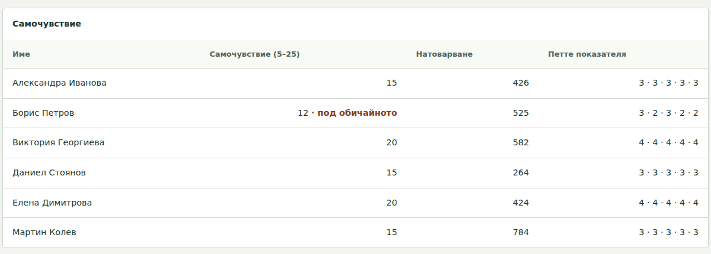

Архитектура
Три части, модули и един договор

Администратор — всички клубове, потребители, дневник
Треньор — групи, сесии, самочувствие, бележки
Спортист — скокове, сесии, самочувствие, отговори
Национален есенен турнир „Джон Атанасов“ · Разпределени приложения
Числа за приземяването — от един телефон, без лаборатория.
Проблемът
Оптична система с маркери и силови платформи: точно, но струва десетки хиляди левове и иска специалист.
Треньорът гледа скока, сравнява го с паметта си и не пази история в числа.
Заснемането на непълнолетни спортисти и качването му някъде е риск за поверителността.
Въпросът: може ли телефонът, който всеки вече има, да даде числа, които се следят във времето?
2Решението
Клип от 10 секунди, телефонът на височината на коленете.
Позата, ъглите, времето на полет и височината се смятат на самия телефон.
Само 14 числа отиват в клубния сървър; треньорът вижда историята и графиките.
Видеото никога не напуска телефона. Няма поле за видео, снимка или точки от позата.
3Клубна платформа
Планирани тестови сесии за група или целия клуб, с календар (.ics) и доклад на трите опита.
Ежедневно отбелязване с пет оценки и натоварване; треньорът вижда отбора за деня.
Бележки от треньора за всеки спортист — за скок или сесия — с отговор в приложението.

Всичко се обновява на живо в панела — нов скок, отбелязване или бележка опресняват отворения изглед без презареждане.
4Архитектура
Администратор — всички клубове, потребители, дневник
Треньор — групи, сесии, самочувствие, бележки
Спортист — скокове, сесии, самочувствие, отговори
Как се смята
θ = ъгълът между бедрото и подбедрицата от триизмерните точки на модела. Прав крак е 0°.
h = g · t² / 8
Времето t е от първия кадър във въздуха до първия кадър на земята. Половината полет тялото се издига, половината пада: h = ½·g·(t/2)².
t = 360 ms → h ≈ 15,9 cm
Демо


Точност
| Девет души, 91 скока на изглед | Отпред | Отстрани |
|---|---|---|
| Число без предупреждение | 64 | 60 |
| от тях грешни | 0 | 2 |
| С предупреждение → проверка на кадрите | 7 | 0 |
| Предложени кадри | 20 | 25 |
| Грешка в ъгъла (RMSE) | 17° | 10° |
Еталон: силова платформа и лабораторна кинематика, набор на Университета в Твенте (CC BY 4.0).
Всеки човек е проверен с модел, който не го е виждал. „Грешно“ = отместено с повече от два кадъра.
Затова числата са за сравнение на спортиста със самия него, не за диагноза.
Поверителност и сигурност
Тестове и качество
автоматични теста на сървъра: права, граници, атаки, експорт и модулите
теста на ядрото, включително истински клипове и лабораторния набор
двата набора се пускат при всяко качване в Git
Числата във валидацията са получени от същия анализатор, който работи на телефона.
10Резултат и развитие
[АДРЕС НА САЙТА] · код: [АДРЕС НА ХРАНИЛИЩЕТО] · GPL-3.0
11